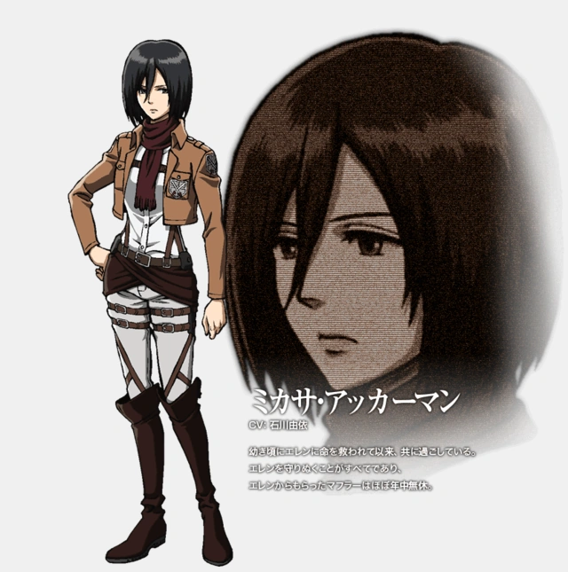
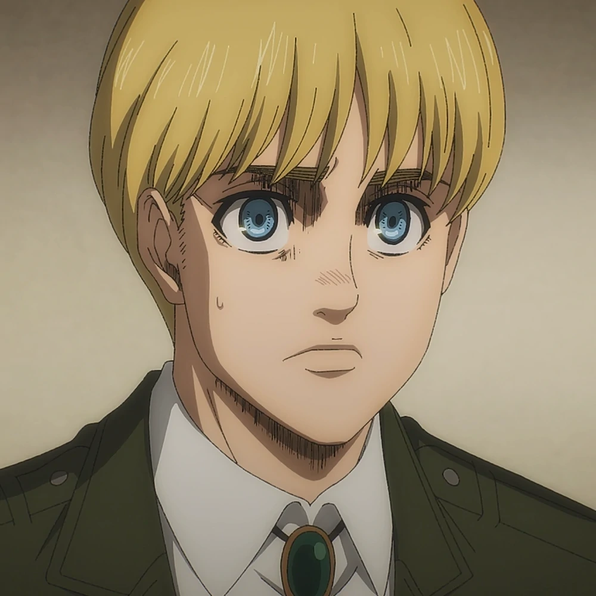

Mikasa Ackerman
La hermana adoptiva de Eren Jaeger. Le debe mucho a él, desde que la salvó de los secuestradores que pretendían convertirla en esclava, y pasa la mayor parte de su tiempo juntos. Así pues, aunque a veces no esté de acuerdo con lo que hace, pero lo protege de cualquiera que trate de hacerle daño. 
Armin Arlert
Último comandante del Cuerpo de Exploración luego de ser nombrado por Hange Zoë poco antes de su muerte. Es un amigo de la infancia de Eren Jaeger y Mikasa Ackerman. Aunque físicamente es más débil que el resto de sus compañeros, demuestra una gran inteligencia a través de su capacidad estratégica y soluciones rápidas. 